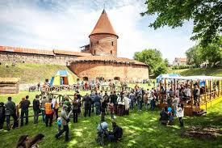

Kaunas - antrasis pagal dydį Lietuvos miestas šalies centrinėje dalyje, Nemuno ir Neries santakoje. Svarbus pramonės, transporto, mokslo ir kultūros centras, Laikinoji sostinė.
Miestas yra beveik pačiame Lietuvos centre, Lietuvos Vidurio žemumoje, išsidėstęs didžiausių šalies upių Nemuno ir Neries santakoje. Prieš miestą, užtvenkus Nemuną, suformuotos Kauno marios. Kitoje miesto pusėje telkšo Lampėdžio ežeras.
Kaunas iškilęs apie 70-80 m virš jūros lygio. Aukščiausias miesto taškas yra IX forte (100,1 m), žemiausias - Nemuno vagoje ties Lampėdžiais. Miesto centrinė dalis yra tarp Nemuno ir Neries upių, žemumoje, 30-35 m aukštyje virš jūros lygio, apsupta trijų - Žaliakalnio, Aleksoto ir Šilainių kalvų. Miesto centrą supančiuose šlaituose pastatyta dešimtys laiptų, kurie būtini dėl vietos reljefo ypatybių. Vieni žinomiausių - Stasio Kudoko projektuoti Kauko laiptai.
Miesto klimatas žemyninis, šalčiausias - sausio, šilčiausias - liepos mėnuo. Per metus iškrenta apie 630 milimetrų kritulių. Vyrauja pietvakarių krypties vėjai. Mieste yra daug saugomų teritorijų, draustinių, kuriuose aptinkami į Lietuvos raudonąją knygą įrašyti gyvūnai. Gražiausi mieste parkai - Ąžuolynas, Pažaislio ir Panemunės šilai.
Pagrindiniai Kaune aplinkos teršėjai yra transportas, pramonės ir energetikos įmonės. Geriamajam vandeniui paruošti naudojamas gruntinis ir paviršinis vanduo, išgaunamas keturiose miesto vandenvietėse.
Gyvenvietė Neries ir Nemuno santakoje buvo įkurta vėliausiai X a. Manoma, kad Kaunas minimas 1030 m. arabų aprašymuose. 1140 m. arabų geografas al Idrisijus šiose vietose mini Qaynu arba Qanys gyvenvietę, kuri galėjo būti dabartinio Kauno vietoje. Santakos gyvenvietės teritorijoje XIV a. viduryje buvo pastatyta mūrinė Kauno pilis. Kryžiuočių heroldo Vygando Marburgiečio kronikoje Kauno gyvenvietė pirmą kartą paminėta 1361 m. kaip Kawen. 1362 m. Vokiečių ordinas Kauno pilį užėmė ir sugriovė. XV a. pradžioje pilis atstatyta.
Sužinok daugiau apie Kauno istoriją.
1408 m. Vytautas Didysis miestui suteikė Magdeburgo teises. Miestas buvo prekybos kelių sankirtoje ir turėjo Kauno upių uostą, dėl to sparčiai plėtojosi prekyba ir amatai. 1413 m. Kaunas tapo Trakų vaivadijos Kauno pavieto centru. XV a. pradžioje tai buvo vokiečių pirklių miestas, 1441 m. jame įkurta Hanzos kontora. 1539 m. jis pavaizduotas Olaus Magnuso sudarytame žemėlapyje „Carta Marina“.
Dėl XVII a. viduryje prasidėjusių karų ir epidemijų, Kauno plėtra labai sulėtėjo. 1665 m. miestą kelis kartus puolė Rusijos kariuomenė, 1701 m. užėmė švedai. 1657 ir 1708 m. mieste siautė maras, 1731 ir 1732 m. dalį miesto sunaikino gaisras.
1795 m. po Abiejų Tautų Respublikos padalinimų miestas prijungtas prie Rusijos Vilniaus gubernijos. Napoleono karų metu 1812 m. Napoleono kariuomenė dukart praėjo pro miestą, abukart jį nusiaubdama. Miesto ekonomika atsigavo XIX a., 1843 m. tapus Kauno gubernijos centru, 1862 m. nutiesus geležinkelį ir 1898 m. pradėjus veikti pirmajai elektrinei. Miesto kultūrinis gyvenimas pagyvėjo po 1863 m. sukilimo numalšinimo 1864 m. iš Varnių atkėlus Žemaičių vyskupijos centrą ir kunigų seminariją. 1876 m. gatvės apšviestos žibalinėmis lempomis, 1899 m. - elektra. 1892 m. įkurtas teatras, 1898 m. - Kauno miesto muziejus. XIX a. pabaigoje Kaunas - miestas, gubernijos ir apskrities centras.[8]
1919 m. Kaune pradėjo veikti pirmoji radijo stotis Lietuvoje. Tarpukario metais Kaunas stipriai išsiplėtė ir tapo svarbiausiu Lietuvos mokslo, pramonės, kultūros ir švietimo centru, 1920-1939 m. buvo laikinoji Lietuvos sostinė. Po to, kai 1940 m. birželio 15 d. Sovietų Sąjunga okupavo Lietuvą Kaune kūrėsi pogrindinės organizacijos. 1941 m. birželio 22 d. Kaune prasidėjo LAF organizuotas sukilimas prieš okupacinį režimą. Buvo sudaryta Laikinoji vyriausybė, kuri birželio 23 d. paskelbė atstatanti laisvą ir nepriklausomą Lietuvą. Birželio 25 d. į Kauną įžengę vermachto daliniai rado jį išlaisvintą nuo okupantų, tačiau Laikinąją vyriausybę toleravo tik pusantro mėnesio. Po Antrojo pasaulinio karo okupacinė valdžia naikino viską, kas priminė nepriklausomos Lietuvos gyvenimą, Kaunas buvo paverstas uždaru pramonės miestu. Tik prasidėjus Atgimimui mieste buvo atkurtas Vytauto Didžiojo universitetas, pradėti atstatyti paminklai, grąžinti istoriniai viešųjų erdvių, įstaigų, gatvių pavadinimai.
1991 m. sausio įvykių metu sovietų kariuomenei pasikėsinus į Lietuvos valstybingumą, Kaune, taip pat prie Sitkūnų radijo ir televizijos siųstuvų, budėjo žmonės, pasiryžę paaukoti už ją savo gyvybes. Okupavus Lietuvos televizijos pastatus Vilniuje, iš Kauno buvo transliuojama vienintelė lietuviška televizijos programa. Atkūrus Lietuvos valstybingumą, 1993 m. patvirtintas naujasis Kauno herbas. Miesto ekonomika palaipsniui persitvarko į paslaugas orientuotas sritis, tokias kaip logistika, transportas, turizmas, informacinių technologijų plėtra.
Kauno gyventojai

Kauno mieste gyvena 10,6 % visų Lietuvos gyventojų. Pagal tautybę apie 93 % miesto gyventojų yra lietuviai, 4 % - rusai, kitų tautybių - 3 %. 2001 m. gyventojų surašymo duomenimis, mieste gyvenančios tautinės mažumos (žmonių skaičius): rusai (16 622), ukrainiečiai (1906), lenkai (1600), baltarusai (1142), žydai (427), vokiečiai (378), čigonai (364), latviai - (211), totoriai (200), armėnai (141), kitų tautybių (534).
Kaunas šiuo metu yra vienas tankiausiai apgyvendintų Lietuvos miestų. Pagal etninių gyventojų skaičių šis miestas didžiausias iš visų Baltijos šalyse esančių miestų. 1896 m. lietuviai Kaune sudarė tik 6 % gyventojų.
Tautinė sudėtis
Tautybė
Procentai (gyventojų skaičius)
Lietuviai
93,63% (296.861)
Rusai
3,77% (11.913)
Ukrainiečiai
0,39% (1231)
Lenkai
0,36% (1136)
Kiti
1,7% (5842)
Žymūs žmonės
📖 Maironis (tikroji pavardė Jonas Mačiulis, 1862 m. spalio 21 d. (pagal Julijaus kalendorių) Pasandravio dvare, Šiluvos valsčiuje, Raseinių apskrityje. - 1932 m. birželio 28 d. Kaune) - kunigas, profesorius; XIX ir XX a. lietuvių romantizmo poetas, parašęs tokius Lietuvoje žymius kūrinius kaip „Trakų pilis“, „Lietuva Brangi“ ir daugelį kitų.
Daugiau
Gimė laisvųjų valstiečių šeimoje, tėvas buvo mažaraštis, bet iniciatyvus valstietis. Namie įgijęs pradinių mokslo žinių ir pramokęs lenkų kalbos, 1873 m. įstojo į Kauno gimnaziją, kurią baigė 1883 m. 1883-1884 m. studijavo literatūrą Kijevo universiteto istorijos ir filologijos fakultete. 1884 m., atsižvelgdamas į tėvų norą, įstojo į Kauno kunigų seminariją. 1888 m. ją sėkmingai baigęs, toliau tęsė mokslus Peterburgo dvasinėje akademijoje, kurią baigė 1892 m.
1893-1894 m. ir 1909-1932 m. dėstė Kauno kunigų seminarijoje, 1909-1932 m. seminarijos rektorius. 1894-1909 m. - Peterburgo dvasinės akademijos profesorius; nuo 1903 m. - teologijos daktaras. 1922-1932 m. Kauno universiteto, (nuo 1930 m. Vytauto Didžiojo universitetas) Moralinės teologijos katedros vedėjas. 1923-1924 m. 1932 m. suteiktas Vytauto Didžiojo universiteto garbės daktaro vardas.
🎭 Donatas Banionis (1924 m. balandžio 28 d. Kaune - 2014 m. rugsėjo 4 d. Vilniuje) - Lietuvos teatro, kino, televizijos aktorius, režisierius.
Daugiau
D. Banionis sekė būsimojo „tikrojo“ teatro veiklą. V. Blėdis jam atnešdavo J. Miltinio dėstomų dalykų užrašus, studijoje repetuojamas pjeses. Tuo pat metu ėmė formuotis ir Panevėžio teatro trupė. Buvo atidarytas Panevėžio Valstybinis dramos teatras. 1940 m. pabaigoje vyresnysis D. Banionio draugas V. Blėdis išvažiavo į Panevėžį. 1941 m. pavasarį Panevėžio teatrui atvažiavus pirmųjų gastrolių į Kauną, Donatas ryžosi ateiti pas J. Miltinį. Pastarasis lengvai priėmė D. Banionį į savąjį teatrą. D. Banionis metė mokslus menų mokykloje. 1941 m. gegužės 30 d. D. Banionis apsigyveno Panevėžyje, o nuo birželio 1 d. pradėjo gauti aktoriaus atlyginimą. Prasidėjus karui, su teatro kūrybine grupe pasitraukė į Žemaitiją, bendravo su Vytautu Mačerniu.
1945 m. baigė Panevėžio dramos teatro vaidybos studiją. 1949 m. suvaidino savo pirmąjį reikšmingą vaidmenį – Andrejų A. Ostrovskio ir N. Solovjovo dramoje „Belugino vedybos“. Po to sekė kiti vaidmenys. 1957 m. Henriko Ibseno „Hedoje Gabler“ sukūrė vieną iš geriausių savo vaidmenų – Jorgeną Tesmaną, o 1958 m. A. Milerio „Komivojažerio mirtyje“ – Vilį Lomeną. Tuo laikotarpiu D. Banionis pabandė ir režisuoti. 1956 m. kartu su Jonu Alekna pastatė B. Nušičiaus „Dr.“ („Filosofijos daktarą“), o 1958 m. jau vienas – J. Švarco „Paprastąjį stebuklą“, tačiau aktorius to niekada nelaikė savo pašaukimu.[2]
1959 m. J. Miltiniui grįžus į teatrą, D. Banionis suvaidino Bopertiu E. Labišo komedijoje „Šiaudinė skrybėlaitė“, atliko Banko vaidmenį Viljamo Šekspyro „Makbete“, Davydovą „Pakeltoje velėnoje“ (pagal M. Šolochovo romaną). 1966 m. sukūrė vieną sunkiausių savo vaidmenų – Bekmaną V. Borcherto pjesėje „Lauke, už durų“, o 1973 m. – Edgarą A. Strindbergo dramoje „Mirties šokis“.
1974–1979 m. LSSR AT deputatas; 1974–1977 m. SSRS AT deputatas.[3]
Nuo 1980 m. vadovavo Panevėžio dramos teatrui. 1981–1984 m. Panevėžio dramos teatro vyr. režisierius. 1983 m. Panevėžio dramos teatre įsteigė LSSR konservatorijos aktoriaus meistriškumo katedros filialą ir jam vadovavo. 1984 m. baigė LSSR konservatoriją. 1984–1988 m. Panevėžio dramos teatro direktorius, meno vadovas. 1984–1988 m. LSSR konservatorijos kurso vadovas. Lietuvai atgavus nepriklausomybę, D. Banionis išėjo iš teatro, vaidino pagal sutartis. Viso Panevėžio dramos teatre sukūrė per 100 vaidmenų.
🎻 Vilhelmas Čepinskis (g. 1977 m. kovo 19 d. Kaune) – lietuvių smuikininkas.
Daugiau
1984 m. septynerių metų debiutavo Kauno filharmonijoje. 1987 m. pirmąkart griežė su Lietuvos nacionaliniu simfoniniu orkestru. Tarptautinio J. Kociano jaunųjų smuikininkų konkurso (Čekija, 1988 m.), SSRS smuikininkų konkurso (1989 m.), New Names fondo (SSRS, 1989 m.), tarptautinio Balio Dvarionio smuikininkų konkurso (1989 m.) laureatas. 1991 m. Lietuvai suteikiant narystę grojo Jungtinėse Tautose.
Solinius koncertus bei koncertus su orkestru grojo visoje Europoje, Dominikos respublikoje, JAV. Dalyvavo tarptautiniuose muzikos festivaliuose Meranofeste, Ankaroje, Vestfolde, Pažaislyje ir kt. Grojo Tilles Center (Niujorkas, 1996 m.), Carnegie Hall (Niujorkas, 1997 m.), Concertgebouw (Amsterdamas, 1999 m.), Maskvos konservatorijos Didžiojoje salėje (2000 m.).[1]
Asmeniniu Yehudi Menuhino kvietimu pasirodė su Londono simfoniniu orkestru, griežė Švedijos karalienės bei Norvegijos karališkosios šeimos oficialių vizitų į Lietuvą metu.
2004 m. subūrė trylikos styginių instrumentų kamerinį orkestrą, kuriame groja jauni, talentingi muzikai iš visos Lietuvos. 2005 m. šiam kolektyvui suteiktas „Camerata Klaipėda“ vardas. „Camerata Klaipėda“ pasirodymai yra transliuojami Lietuvos, Lenkijos, Prancūzijos, Kosta Rikos televizijų, specialią apybraižą apie orkestrą yra parengęs tarptautinis televizijos žinių tinklas CNN. 2005 m. išrinktas atstovauti Lietuvą Japonijoje vykusioje parodoje Expo-2005.
Įrašė CD: „Sibelius“, koncertas smuikui ir orkestrui d-mol (1995 m.), „Paganini“, koncertas smuikui ir orkestrui, Nr. 2, h-moll (1996 m.), „Sarasate, Karmen fantazija“ (1996 m.), „Shostakovich“, koncertas smuikui bei orkestrui, Nr. 1 a-moll (1997 m.) ir kt.
🏀 Arvydas Romas Sabonis (g. 1964 m. gruodžio 19 d. Kaune) – Lietuvos krepšininkas, olimpinis ir pasaulio čempionas.
Daugiau
1974–1982 m. treniravosi pas trenerį Jurijų Fiodorovą Kauno krepšinio mokykloje.
1981 m. Kauno „Žalgiryje“ pradėjo profesionalo karjerą. Tris sezonus (1985–1987 m.) padėjo iškovoti SSRS krepšinio čempionato aukso medalius. 1982 m. SSRS rinktinėje dalyvavo pasaulio krepšinio čempionate, laimėjo auksą. 1985 m. nugalėjo 1985 m. Europos čempionate ir tapo Universiados čempionu Kobėje (Japonija). 1984 ir 1985 m. laikraštis „Gazzetta dello Sport” (Italija) titulavo Europos metų krepšininku.
1985 m. birželio 18 d. A. Sabonį ketvirtajame NBA naujokų biržos rate 74-uoju šaukimu pasirinko Atlantos „Hawks“ komanda. Pasirinkimas anuliuotas, dėl per jauno amžiaus.
1986 m. pirmojo rato 24-uoju šaukimu A. Sabonį pakvietė Portlando „Trail Blazers“, bet dėl politinių motyvų jis negalėjo išvažiuoti į JAV.
1988 m. vasaros olimpinėms žaidynėms SSRS krepšinio rinktinės treneris Aleksandras Gomelskis pakvietė A. Sabonį į rinktinę. Nepaisant neseno atsigavimo po traumos, krepšininkas padėjo SSRS rinktinei olimpinio turnyro pusfinalyje nugalėti JAV rinktinę (tai tapo antru JAV pralaimėjimu nuo 1936 metų), o finale iškovoti auksą. 1988 m. trečią kartą išrinktas geriausiu Europos krepšininku.
1989 m. krepšininkas jau galėjo palikti SSRS, tačiau pasirinko ne Portlando „Trail Blazers“, o Ispanijos Valjadolido „Forum“ komandą.[5] 1992 m. perėjo į Madrido „Real“. 1993 ir 1994 m. A. Sabonis su „Real“ tapo Ispanijos čempionu, 1995 m. iškovojo Europos klubų čempionato taurę. 1993 ir 1995 m. išrinktas geriausiu Europos krepšininku.
1995 m. prisijungė prie Portlando „Trail Blazers“,[6] kurioje žaidė septynis sezonus (2001–2002 m. sezone nežaidė). 1997 m. išrinktas geriausiu Europos krepšininku. 1999 m. NBA.com svetainės lankytojai A. Sabonį išrinko didžiausią įtaką NBA padariusiu užsieniečiu.
2003 m.,[7] po 14 metų pertraukos, grįžo į Lietuvą ir su Kauno „Žalgiriu“ tapo Lietuvos čempionu ir naudingiausiu Eurolygos sezono žaidėju. 2004 m. gegužės 15 d. sužaidė savo paskutines profesionalo karjeros rungtynes: LKL superfinalo mače prieš Vilniaus „Lietuvos rytą“ įmetė 14 taškų, atkovojo 13 kamuolių ir padėjo savo komandai laimėti LKL finalo seriją. Ilgai aktyviai nebesportavęs, 2005 m. gruodį pareiškė baigiantis krepšininko karjerą.
2011–2021 m. Lietuvos krepšinio federacijos prezidentas.
Kauno seniūnijos
Kaunas turi 11 seniūnijų, jų sąrašą gali pažiūrėti čia:
Ką nuveikti Kaune?
Pasivaikščiok Neries ir Nemuno santakoje
Santaka - Kauno miesto teritorija, esanti vakariniame Senamiesčio pakraštyje, prie Nemuno ir Neries santakos. Yra Santakos parkas, stadionas, stovi Kauno Šv. Jurgio Kankinio bažnyčia, Kauno pilies liekanos. Vyrauja žalieji plotai, pėščiųjų ir dviračių takai.
Muziejus įkurtas 1919 m. liepos 15 d. gamtininko Tado Ivanausko iniciatyva. Ekspozicijoje yra apie 14 tūkst. eksponatų, o moksliniuose fonduose - 200 tūkst. Ekspozicija per 3 aukštus užima 6 sales.
„Mokslo sala“ - tai pirmas mokslo ir inovacijų populiarinimo centras Lietuvoje, kuriame lankytojų laukia net 140 objektų talpinanti ilgalaikė ekspozicija, modernus planetariumas, besikuriančios STEAM laboratorijos.
Žaliakalnyje ir Aleksote „į kalną kylantys nameliai“ šiuo metu yra naudojami ir kaip susisiekimo priemonė, ir kaip pramoga.
Žaliakalnio funikulierius, veikiantis nuo 1931 m., talpinantis 25 keleivius ir judantis 1,4 metrų per sekundę greičiu, vos per pusantros minutės iš miesto centro jus pakels iki Kauno Kristaus Prisikėlimo bazilikos, nuo kurios atsiveria nuostabi Kauno miesto centro panorama.
Aleksoto funikulierius, kuris veikia nuo 1935 m., jungia senąją miesto dalį su Aleksoto šlaitais. Šiuo funikulieriumi galima pakilti į Aleksoto apžvalgos aikštelę, nuo kurios atsiveria graži Kauno Senamiesčio ir miesto panorama.
IX fortas - vienas iš Kauno tvirtovės gynybinių įtvirtinimų, valstybės saugomas istorijos ir architektūros paminklas. IX forte veikia muziejus, kuriame lankytojai supažindinami su įdomia ir savita Kauno tvirtovės gynybinių įtvirtinimų karine architektūra, Pirmojo pasaulinio karo ginkluotės ir ekipuotės pavyzdžiais. Lydimi ekskursijų vadovo lankytojai gali apžiūrėti gynybinės sienos ir poternų vidų. Kita ekspozicijos dalis pristato Kauno sunkiųjų darbų kalėjimo filialo periodą ir supažindina su kalinių buitimi, atkuria NKVD vykdytų represijų epizodus, atskleidžia nacių vykdytų nusikaltimų mastą. Autentiškose kamerose, kurių sienose yra išlikusių žmonių priešmirtinių įrašų, įrengta didelė ekspozicija, atskleidžianti žydų tautos tragediją Lietuvoje, pasakojanti apie Kauno getą ir žudynes. Masinių žudynių vietą ženklina skulptoriaus Alfonso Ambraziūno sukurtas 32 m aukščio trijų skulptūrinių grupių monumentas.
Muziejuje vyksta įvairūs renginiai ir minėjimai, lankytojams teikiamos ekskursijų vadovų paslaugos, organizuojami edukaciniai užsiėmimai, suteikiama galimybė su ekspozicija susipažinti naudojantis audio ir videogidu.
Tai vienas gražiausių baroko architektūros ansamblių Lietuvoje. Šventovę Kauno pakraštyje, tuo metu atokiame miške, XVII a. vienuoliams kamalduliams pastatė Lietuvos Didžiosios Kunigaikštystės kancleris Kristupas Žygimantas Pacas (1621-1684). Ansamblis suprojektuotas italų architekto Džiovanio Batistos Fredianio, išpuoštas Lombardijos skulptūros meistrų lipdiniais ir florentiečio tapytojo Mykolo Arkangelo Palonio freskomis. Ansamblio savitumą lemia unikalus architektūrinis sprendimas. Pirmą kartą Europoje panaudota įgaubta bažnyčios fasado plokštuma, gana retas šešiakampis planas, ašinė simetriška viso vienuolyno kompozicija. Vienuolyno ansamblio pastatuose yra išlikusios apie 140 įvairaus dydžio freskų. Vienuolyne galima išvysti garsųjį Gražiosios Meilės Motinos paveikslą, kurį popiežius Aleksandras VII 1661 m. padovanojo Pažaislio bažnyčios fundatoriui Kristupui Zigmantui Pacui. 1992 m. birželio 15 d. Pažaislio vienuolynas grąžintas Šv. Kazimiero kongregacijos seserims. Seserų dėka Pažaislis tampa ne tik kongregacijos namais, bet ir dvasiniu centru. Pažaislis atveria vartus naujoms visuomeninėms kultūrinėms tradicijoms: atvykusieji supažindami su vienuolyno meninėmis vertybėmis, rengiami kultūros žmonių susitikimai su visuomene, poezijos vakarai. Nuo 1996 m. kiekvieną vasarą vyksta kasmet vis labiau populiarėjantys tarptautiniai Pažaislio muzikos festivaliai. 2011 m. pietinėje vienuolyno oficinoje atidarytas sakralinis Pažaislio vienuolyno ansamblio muziejus. Jame vyksta edukacinės programos.
Šalia Pažaislio vienuolyno muziejaus veikia unikalus svetingumo kompleksas „Monte Pacis“, kur apsistoję svečiai gali mėgautis naujausias gastronomijos pasaulio tendencijas atspindinčiais patiekalais, įkvėptais unikalios vietos ir neįkainojamos bendrystės su seserimis kazimierietėmis.